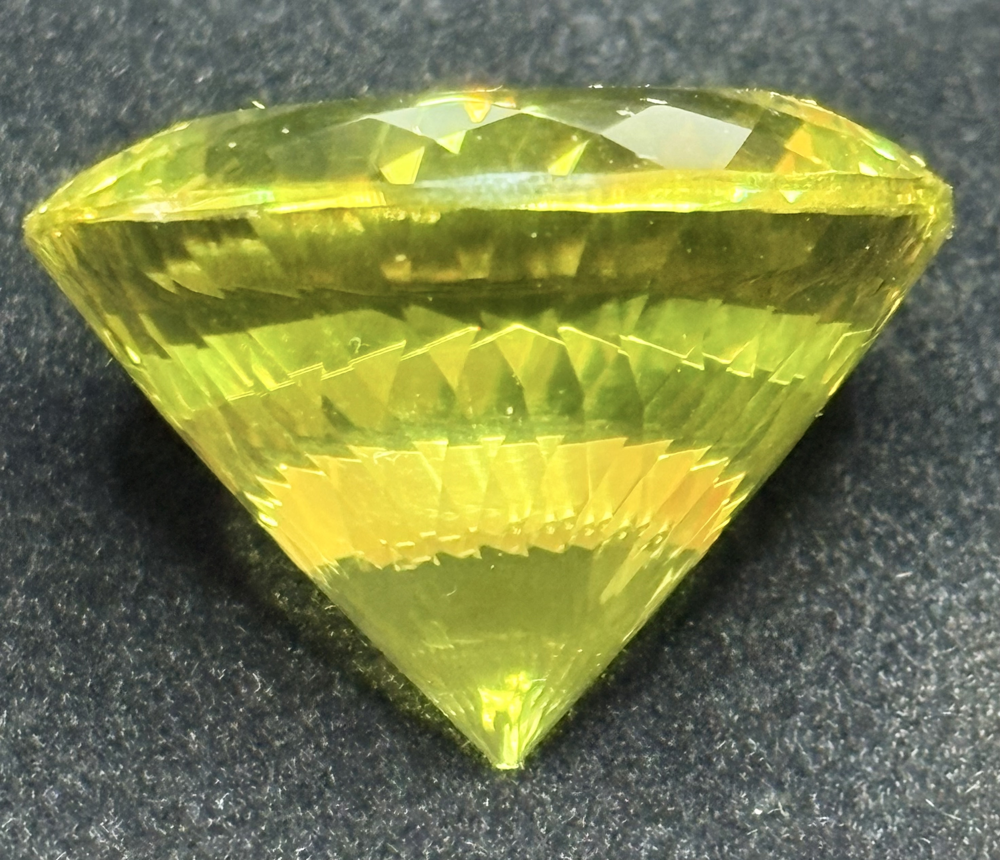

The Gem Drawer › No. 1

A substantial 32 mm Portuguese-cut round in bright lemon yellow.
| Catalogue no. | #1 |
|---|---|
| As labeled | Lemon Citrine |
| Shape / cut | Portuguese Cut, Round |
| Weight | 106.52 ct |
| Measurements | 32 (round) |
| Colour | Lemon yellow |
| Clarity / condition | Eye-visible inclusions present (see photos); not professionally graded |
Interested in this stone, or in the collection as a whole? Terry VanWormer can answer questions about it.
Click here to inquireor email Terry directly at maxrebo34@gmail.com